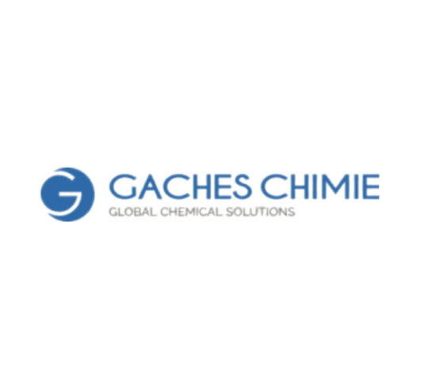

📌 Mes Stages
Voici un aperçu détaillé de mon stage réalisé chez Gaches Chimie, où j’ai pu mettre en pratique mes compétences en informatique et contribuer à divers projets concrets.
🏢 Informations Générales
- Entreprise : Gaches Chimie
- Période : 6 janvier 2025 – 14 février 2025
- Service : Informatique
- Encadrant : Olivier Soulier
- Rapport de Stage
🎯 Objectifs du Stage
Durant ces six semaines, j’ai travaillé sur plusieurs missions variées, touchant à la cybersécurité, à la gestion des utilisateurs et aux bases de données :
- Mise à jour et sécurisation d’un questionnaire de cybersécurité
- Optimisation et évolution des logiciels utilisés par l’entreprise
- Développement d’une page web de statistiques pour une base Oracle
- Création d’un site web facilitant la gestion des utilisateurs d’un ERP
- Rédaction de documentations techniques et guides utilisateurs

🛠 Missions Réalisées
Modernisation d'un questionnaire vieillissant :
- Refonte du questionnaire avec ajout de nouvelles questions et améliorations UX/UI
- Correction des failles de sécurité dans le système de gestion des réponses
- Mise en place d’une base de données améliorée pour stocker les résultats
- Développement d’un tableau de bord pour le suivi des résultats en temps réel
- Intégration d’un système de statistiques avec graphiques dynamiques (Chart.js)
- Rédaction d’un guide pour les utilisateurs et administrateurs
Optimisation des processus internes :
- Automatisation de l’envoi d’e-mails via Google Forms et Sheets avec Google Apps Script
- Refonte et maintenance de scripts existants
- Amélioration de la sécurité et des performances des outils internes
- Création d’une interface d’administration simplifiée pour la gestion des scripts
Création d'une interface dynamique pour analyser les données d'une base Oracle :
- Création de graphiques interactifs (BarChart, PieChart, LineChart)
- Utilisation de PHP, SQL et JavaScript pour récupérer et traiter les données
- Ajout d’un filtrage dynamique avec AJAX pour améliorer l’expérience utilisateur
- Mise en place d’un système d’exportation des données en CSV
- Optimisation des requêtes SQL pour améliorer les temps de réponse
Développement d’un outil de gestion pour l’ERP IFS :
- Conception d’une page listant les comptes actifs avec options de tri et recherche
- Affichage des rôles, statuts et historiques des connexions
- Exportation des données en CSV pour un meilleur suivi
- Intégration d’un PieChart pour visualiser l’utilisation des licences ERP
- Mise en place d’une gestion des droits d’accès selon les profils utilisateurs
📚 Documentation et Guides
- Guide utilisateur pour le questionnaire de cybersécurité
- Manuel d’utilisation des outils statistiques Oracle
- Documentation technique pour la gestion des utilisateurs de l’ERP
- Fiches de résolution des problèmes courants
🚀 Perspectives et Améliorations
- Améliorer l’ergonomie et l’accessibilité des interfaces
- Mettre en place une authentification renforcée sur les outils sensibles
- Créer un système de sauvegarde automatique des bases de données
- Intégrer un chatbot pour guider les utilisateurs
✅ Bilan et Conclusion
- Développement web (PHP, JavaScript, AJAX, CSS)
- Gestion et analyse de bases de données (SQL, Oracle)
- Cybersécurité et protection des données
- Automatisation des processus (Google Apps Script)
- Communication et rédaction technique
Ce stage a enrichi mes compétences et m'a permis de comprendre les enjeux informatiques d'une entreprise.
🙏 Remerciements
Je remercie chaleureusement l’équipe informatique de Gaches Chimie pour leur accueil, leur accompagnement et leur partage d’expérience durant ce stage.